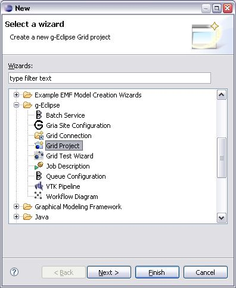
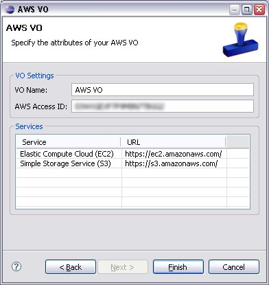
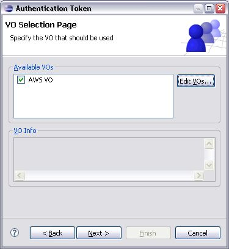
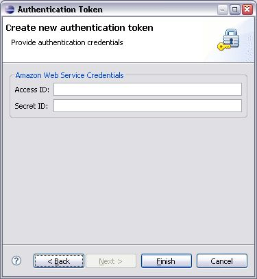
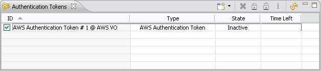

This help page will show you how to setup the Amazon Webservice (AWS) support within g-Eclipse. In order to access any of the features provided by the AWS infrastructure, you need to take some precautions.
To display the information provided by the AWS services you should set up an AWS Virtual Organization (AWS VO). Although some functionality can be leveraged without an AWS VO, it is generally a good idea to create one.
Following the workflow proposed by the g-Eclipse framework we
embed our AWS VO into a Grid Project. To create a Grid Project we use
the "Grid Project Wizard" which can be found in the "New Wizard Dialog"
under g-Eclipse -> Grid Project

Click on the "Next" button and on the following wizard page you simply provide a project name and click "Next" again. We are now at the place where we associate our Grid Project with an AWS Virtual Organization.
As we can see there is currently no Virtual Organization present
in the System. Therefore we hit the "Edit VOs..." button which brings us
to the preference page under g-Eclipse -> VO-Declarations.

To add a Virtual Organization, we click the corresponding "Add" button in the upper right corner, which brings us to a dialog showing all the available VO types.

After selecting the AWS VO, we are faced with the first wizard page, allowing us to configure our own AWS VO. At first we have to provide a unique name to identify the AWS VO. Next we input the AWS access id of our AWS account. The table at the bottom of the dialog displays a list of all currently installed AWS services, which we can facilitate from within g-Eclipse.

After we have filled in all the desired details we click "Finish" in this VO wizard page. We are again faced with the preferences, which we close by hitting "OK", leaving us with the "New Wizard Dialog", where we can choose our configured AWS Virtual Organization.
By selecting this VO and hitting the "Finish" button we associate the newly created Grid Project with the chosen AWS VO. In the "Grid User Perspective" we find our newly created grid project in the "Grid Projects" view.
To provide content for the Virtual Organization, the AWS VO will need to contact the Amazon Webservices. If a request of such type occurs, the user also has to provide his AWS secret id as found on the aws website. The user can create such an authentication token by utilizing the "Authentication Tokens" view or wait until he explicitly needs to interact with the Amazon Webservices, in which case he will be asked to provide his secret id.
When using the "Authentication Tokens" view, the user selects the "Add" wizard from the views toolbar and chooses "AWS Credentials". Once the "Authentication Token" wizard opens up, the user is faced with the following dialog:

When an interaction with the Amazon Webservice is initialized by g-Eclipse and there is no fitting token present, the corresponding Wizard is opened automatically. If a valid token already exists, the wizard does not pop up but the existing token is used.
An authentication token is bound to a specific VO and therefore the user might have to choose its destination VO here. After selecting the appropriate one and clicking "Next", the user is faced with the form to input his AWS credentials.

Once "Finished" is clicked, the newly created token is shown in the "Authentication Tokens" list.
